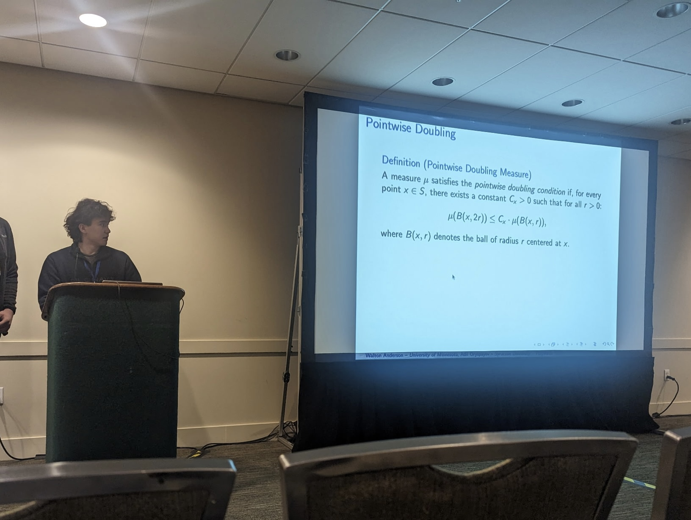

Adil Oryspayev — Portfolio
Incoming Quant Intern at StoneX. CS & Mathematics at Syracuse University. Building at the intersection of algorithms, finance, and applied mathematics.
01 — About

I'm a second-year student at Syracuse University pursuing dual Bachelor's degrees in Computer Science and Mathematics. I'm passionate about applying rigorous mathematical thinking to software systems and quantitative finance.
My work spans academic research in combinatorics, geometric measure theory, and sequence analysis, as well as hands-on engineering: from vector search pipelines and embedded satellite firmware to full-stack optimization platforms.
This summer, I'm joining StoneX Group as a Quant Intern. Previously, I've shipped production infrastructure at the OSPO at Syracuse, managed a high-traffic news platform's backend, and presented research at the 2025 Joint Mathematics Meetings.
02 — Experience
03 — Research
04 — Projects
05 — Education
06 — Skills
07 — Honors & Awards
08 — Contact
Open to quantitative research opportunities and academic collaborations.
Send me an email →